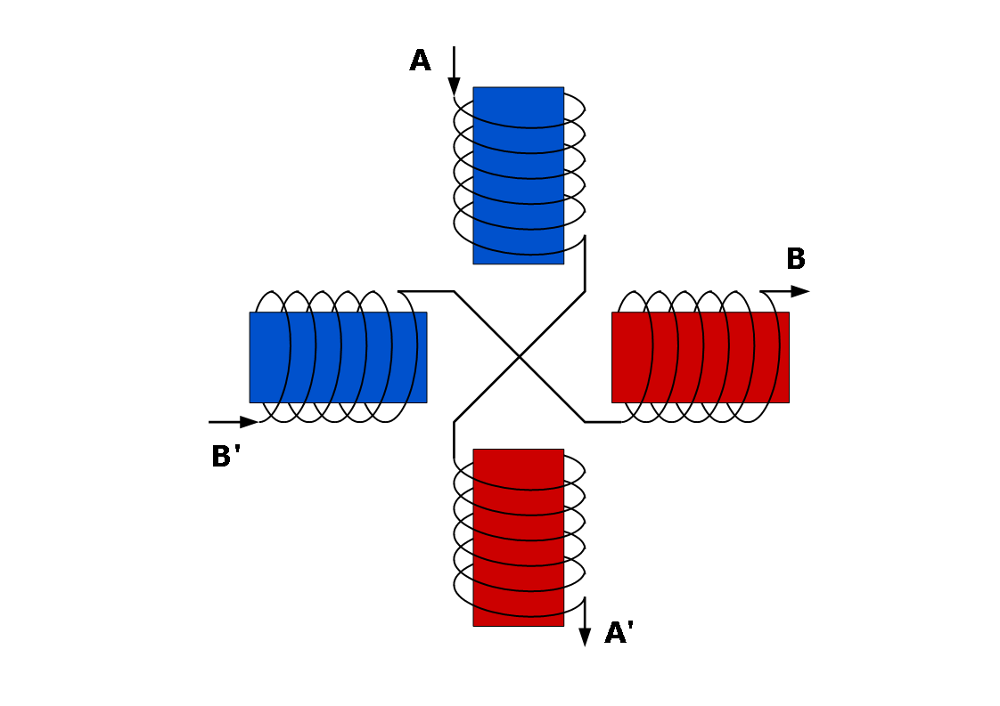
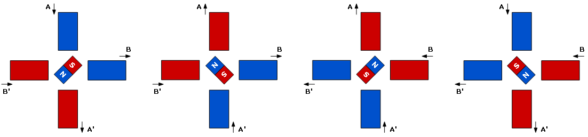
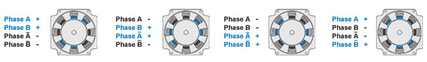

Step Motor Test with L298 Dual H-Bridge Motor Driver
Step Motor은 모터 종류에 따라 구동 방식이 다르다. 여기서는 Raspberry Pi와 L298 Dual H-Bridge Motor Driver를 이용 하여 4 Wire 2Phase Step Motor를 작동하는 테스트를 하였다.
테스트는 다음 사이트를 참고 하였다.
http://www.geekonfire.com/wiki/index.php?title=Dual_H-Bridge_Motor_Driver http://www.raspberrypi.org/forums/viewtopic.php?f=49&t=55580
사용된 하드웨어와 구성은 다음과 같다.
- Raspberry Pi Model B+
- L298 Dual H-Bridge Motor Driver
- 5V Power Supply
- 스텝모터 (42HS40-1704A05)

코드 작성에 앞서 기본적인 작동 방식을 알아보자. 4wire 2Phase Step Motor의 경우 다음과 같이 4개의 코일로 구성되어 있으며 2개의 코일이 같은 wire로 연결되다. 따라서 전류가 흐를 때 2개의 코일은 항상 반대 극성을 만들어 낸다.
보통 스텝모터의 회전축은 영구자석으로 되어있으므로 다음과 같이 극성을 만들어 주면 모터가 회전하게 된다. 그림에는 한 step당 90도 회전을 하지만 코일의 수를 늘이고 영구자석을 톱니모양으로 만들면 좀더 미세한 각도로 회전한다. 일반적으로 많이 쓰이는 Step Motor의 Step 각도는 1.8도이다.
참고로 실제 모터 구조와 작동 방법은 다음 그림에 가깝다.
그림 출처: http://www.orientalmotor.com/technology/articles/2phase-v-5phase.html 실제로 위 그림과 같이 극성을 만들기 위해서는 코일에 전류를 순차적으로 흘러줘야 하는데 Motor Driver가 외부 입력에 따라 모터에 전류를 공급한다. L298 Dual H-Bridge Motor Driver는 2개의 DC Motor 제어가 가능하다. 간단히 설명하면 총 6개의 입력신호 중 EA, IN1, IN2가 첫 번째 모터를, EB, IN3, IN4가 두 번째 모터를 제어한다. EA, EB는 모터를 Enable 시키는 신호이며, IN1 ~ IN4는 모터의 전류 방향을 결정한다. 즉, IN1과 IN2신호에 따라 전류 방향이 바뀌며 IN3와 IN4도 마찬가지 이다. 이걸 이용하면 4Wire 2Phase Step Motor에 순차적으로 전류를 흘러줄 수 있다. 참고로 Step Motor의 경우 L298 Motor Driver에 있는 2개의 Motor 출력핀에 직접 연결해도 되고 Step Motor 출력핀에 바로 연결해도 동일하게 동작한다.
이제 위 조건에 맞게 신호를 만드는 코드를 다음과 같이 작성한다.
step.c
#include <stdio.h>
#include <wiringPi.h>
#define TRUE 1
#define FALSE 0
#define DELAY 1800
#define EA 15
#define EB 4
#define IN1 16
#define IN2 1
#define IN3 5
#define IN4 6
void setStep(int a, int b, int c, int d)
{
digitalWrite(IN1, a);
digitalWrite(IN2, b);
digitalWrite(IN3, c);
digitalWrite(IN4, d);
}
int main(void)
{
if(wiringPiSetup() == -1)
{
printf("Init Error\n");
return 1;
}
pinMode(EA, OUTPUT);
pinMode(IN1, OUTPUT);
pinMode(IN2, OUTPUT);
pinMode(EB, OUTPUT);
pinMode(IN3, OUTPUT);
pinMode(IN4, OUTPUT);
digitalWrite(EA, TRUE);
digitalWrite(EB, TRUE);
int i;
int loop;
for(;;)
{
for(i=0; i<500; i++)
{
setStep(1,0,1,0);
delayMicroseconds(DELAY);
setStep(0,1,1,0);
delayMicroseconds(DELAY);
setStep(0,1,0,1);
delayMicroseconds(DELAY);
setStep(1,0,0,1);
delayMicroseconds(DELAY);
}
delay(1000);
for(i=0; i<500; i++)
{
setStep(1,0,0,1);
delayMicroseconds(DELAY);
setStep(0,1,0,1);
delayMicroseconds(DELAY);
setStep(0,1,1,0);
delayMicroseconds(DELAY);
setStep(1,0,1,0);
delayMicroseconds(DELAY);
}
delay(1000);
}
digitalWrite(EA, FALSE);
digitalWrite(EB, FALSE);
위 코드에서 setStep함수는 IN신호를 만드는 함수로 총 4번의 Step이 1Cycle이 된다. 1Step당 1.8도씩 회전하며 총 회전수는 반복문을 통해 제어 가능하다. 따라서 모터를 1회전 하고자 하면 반복 횟수를 50(360 / 1.8 / 4)으로 하면 된다. 모터 속도는 DELAY시간에 따라 바뀌는데 시간이 너무 짧은 경우 회전하지 않는다. 모통 모터마다 최대 응답속도가 있으므로 그에 맞게 조절해야 한다. 테스트한 모터의 경우 1.8ms(대략 167rpm)보다 짧은 경우 불규칙적인 회전을 보인다. Step신호를 반대로 주면 순서가 반대로 작용하므로 모터 방향이 바뀐다. 모터의 방향은 Step순서를 반대로 하면 된다.
테스트 결과는 다음과 같다.